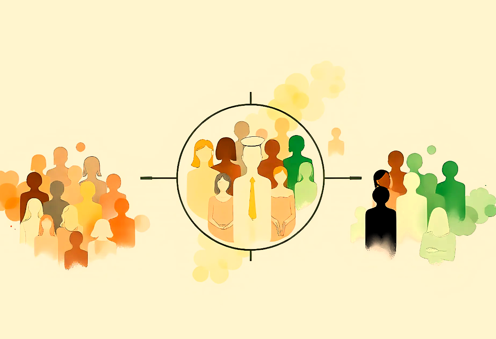

December 2024
Customer Segmentation for a Grocery Store

Analyzed
customer data using unsupervised learning techniques, including clustering algorithms,
to identify distinct customer groups and provide actionable insights for targeted
marketing and business strategies.
#Python
#machine-learning
#data_preprocessing
#clustering
#EDA
December 2024
Emotion Recognition from Voice RAVDESS dataset
Leveraged deep learning
techniques on the RAVDESS dataset to identify patterns in vocal expressions, enabling
emotion classification and sentiment analysis.
#Python
#deep-learning
#data_preprocessing
#SVM
#audio_analysis
December 2022
Hex Game
with AI Agent
A Java implementation of the classic Hex board game featuring an AI opponent with strategic decision-making capabilities.
#Java
#Artificial_intelligence
#Game
January 2024
Library Management system
This project is a desktop application built with Python and PyQt5 that interacts with an MSSQL database to manage a library system using SQL and Python.
#Python
#Sql
#Database